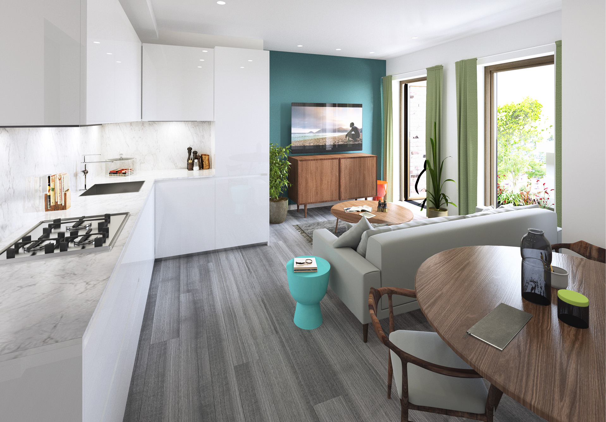
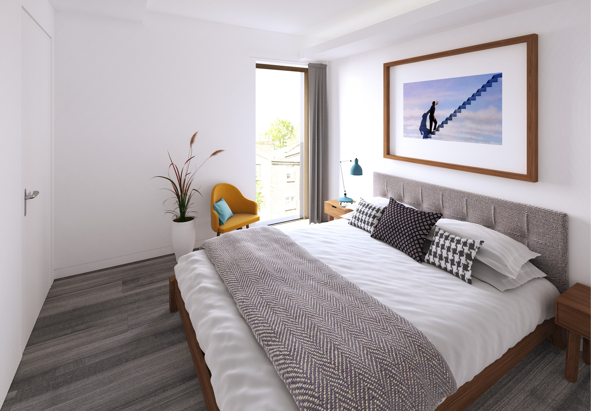
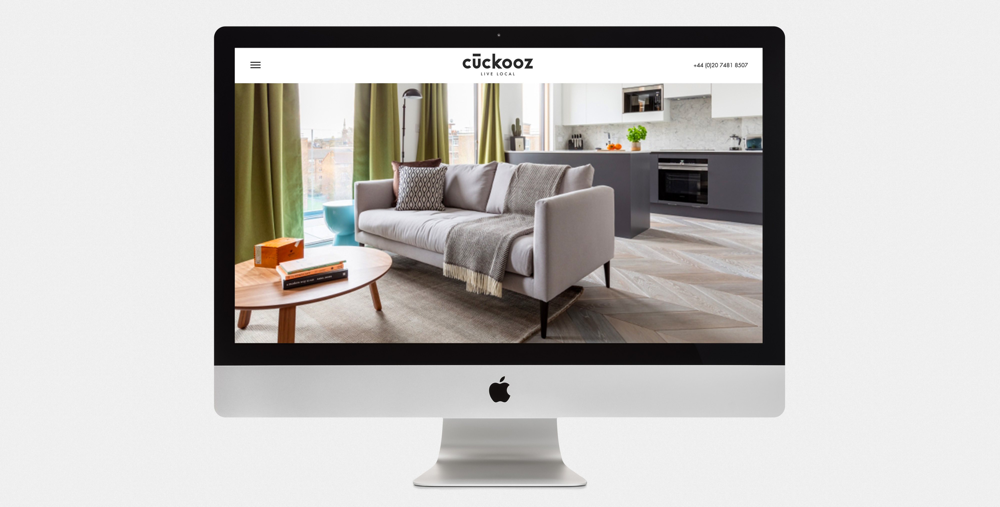
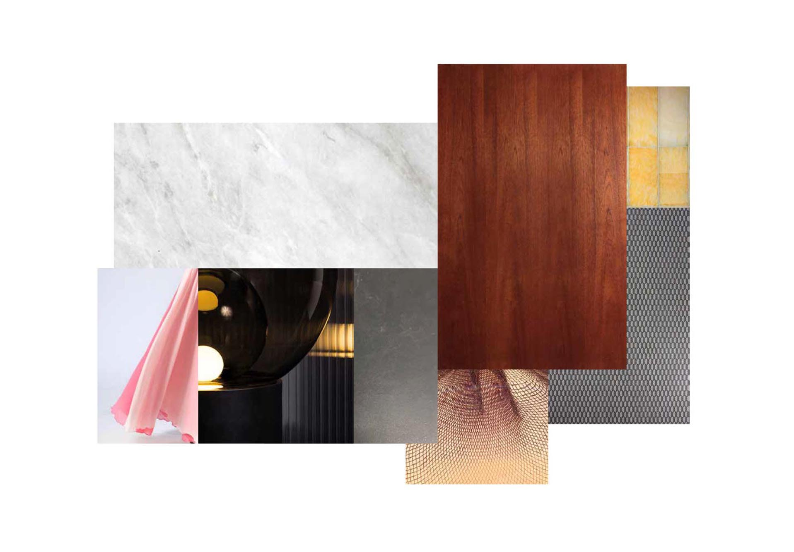
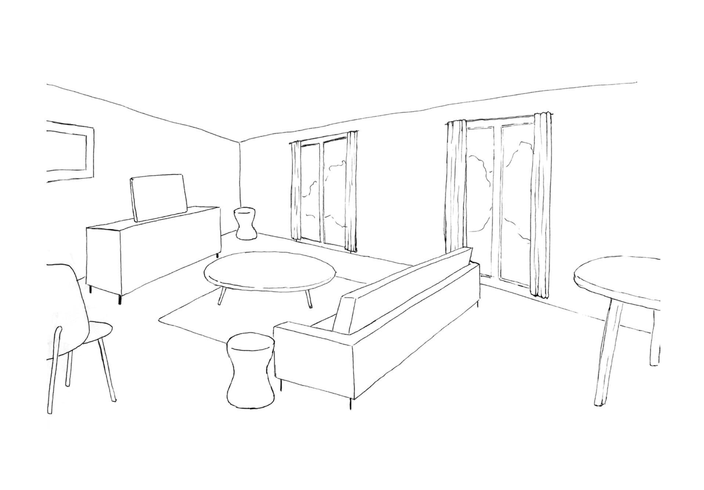
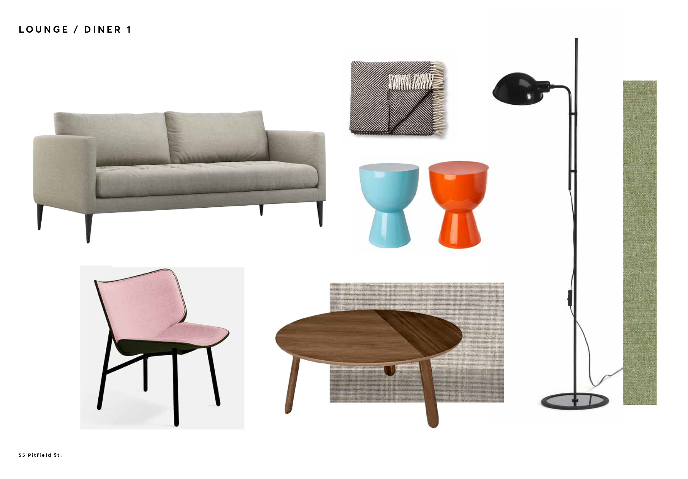
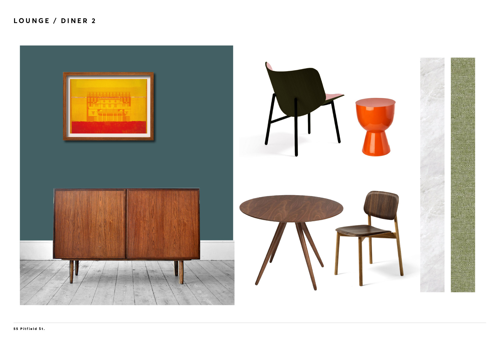
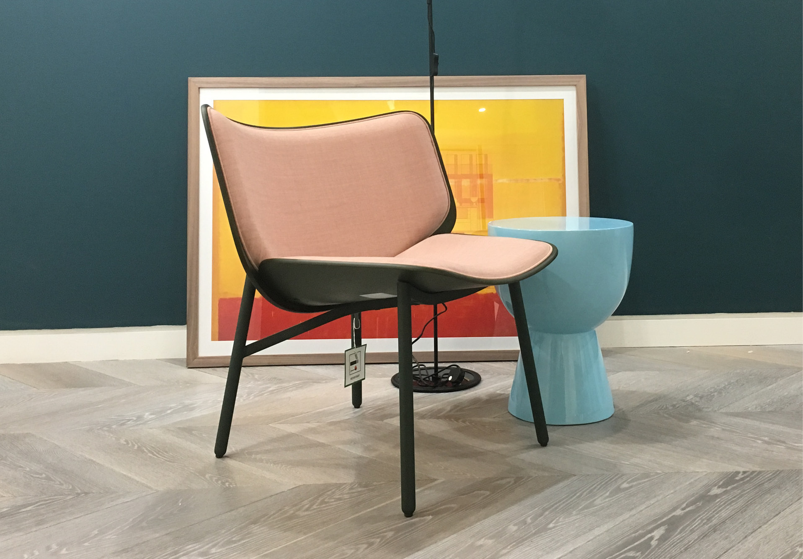
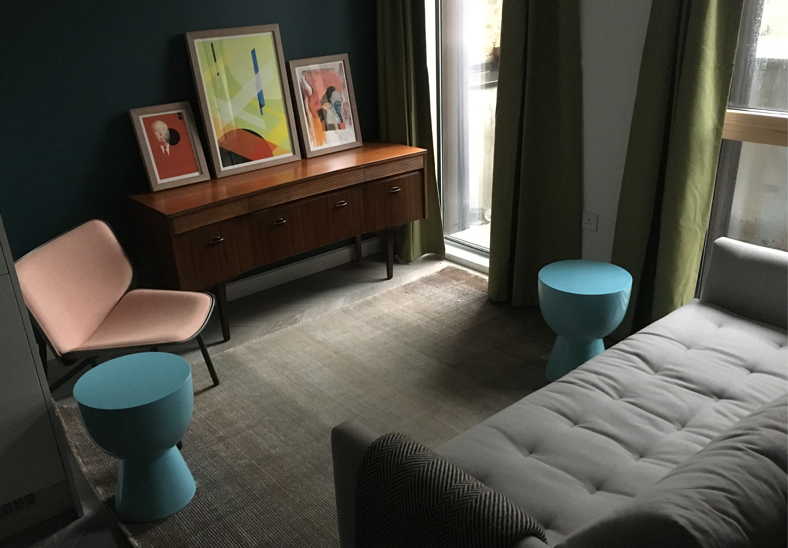

A new residential development and Curzon cinema located in Old Street, London.
Produce a colour scheme and source furniture for 12 rental apartments of varying size, overseeing all aspects of interior design, procurement and installation.
I was commissioned by Cuckooz Apartments to lead the interior design of their newest and largest property, as part of a collaboration with well established procurement specialists Conran Interiors.
Retaining their playful & youthful brand aesthetic I created a sophisticated theme including unique mid-century pieces and high quality accent coloured furniture, to balance with the existing neutral marble interiors and white washed walls.
Launching in early 2019, this landmark property’s interior has bene widely praised, thus creating desirable homes for their target market.